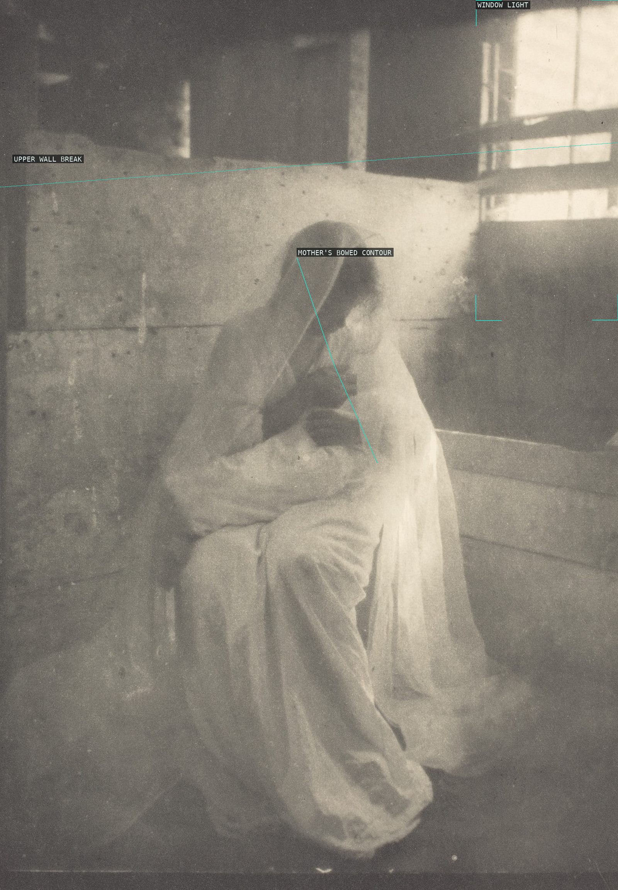
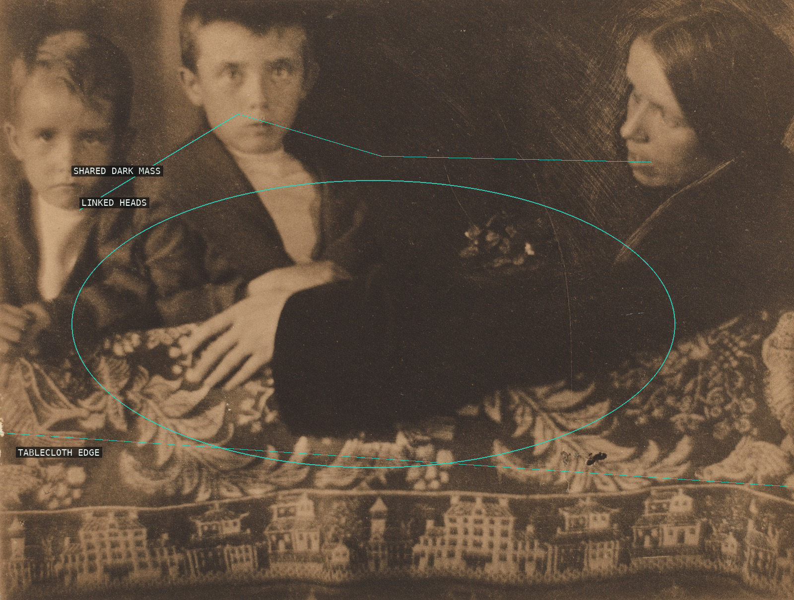
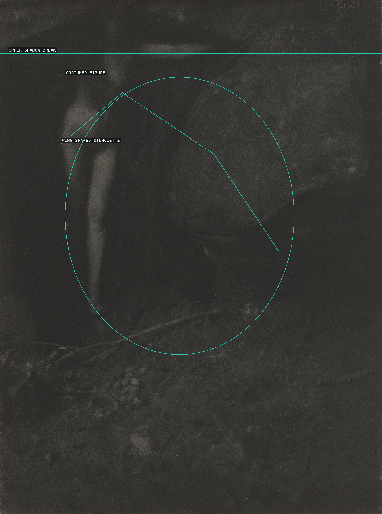
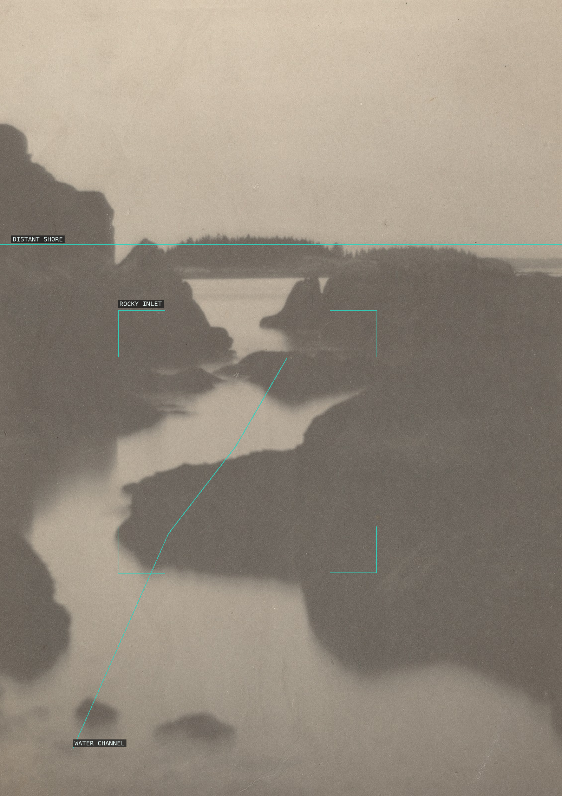
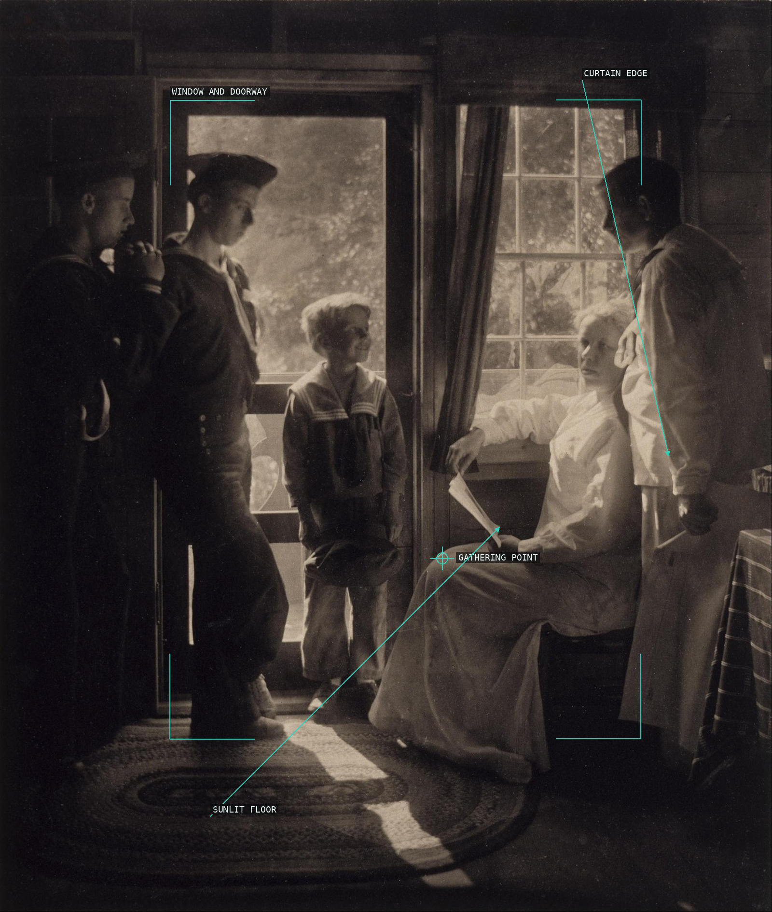
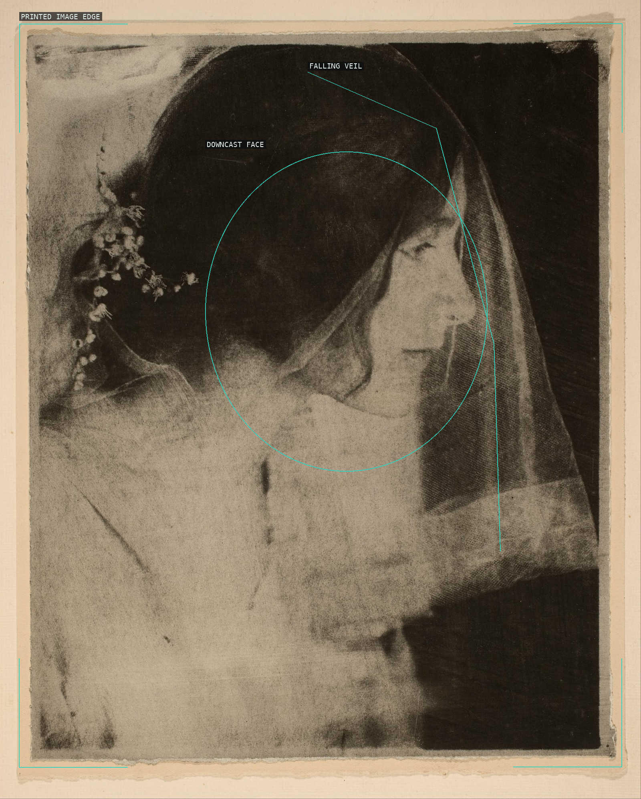
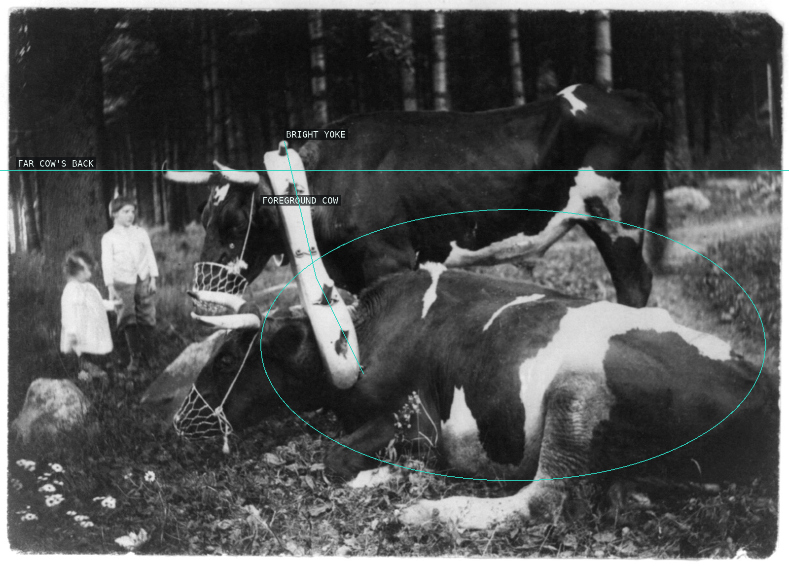

The mother-and-child group gathers beneath a tilted architectural break while the window's pale rectangle counterbalances the bowed figure.

The doorway makes the child an upright dark mass; the mother's pale diagonal interrupts that stillness from behind.

Four faces make a shallow arc above a single pooled dark mass, while the patterned tablecloth seals the group into the frame.

A bright profile advances from a very dark field; the calm horizontal of the shoulder and the gaze to the right hold the portrait taut.

The softly balanced face is a small island of light; the surrounding brown field keeps attention on the eyes.

The faint figure is held inside one broad wing-shaped silhouette, a tonal apparition that only gradually separates from the dark ground.

Dark rocks form a rough aperture around a pale channel, which carries the eye toward the low distant shore.

Window, doorway, curtain, and the long stripe of sun turn a family interior into a deliberately staged convergence.

The veil supplies a dark, almost symmetrical enclosure around a small downcast face and luminous gown.

The bright yoke crosses two dark animal masses, making the binding device immediately legible within a low, horizontal pastoral frame.